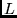
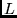
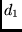
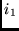

The SAM system handles a type of hidden Markov model that was
developed specifically for biological sequences. It consists of a
chain of `nodes', each of which consists of a `match' state, an
`insert' state, and a `delete' state (Figure 1 on
page  ). The only way the structure can be
varied is in the length, i.e., how many nodes the model has. There are
three transitions out of each state, which can be taken with some
probability. One of these transitions leads to the insert state in
the same node, whereas the others lead to the match and delete states in
the next node. Two states are special: the begin state (numbered 0)
and the end state (numbered
). The only way the structure can be
varied is in the length, i.e., how many nodes the model has. There are
three transitions out of each state, which can be taken with some
probability. One of these transitions leads to the insert state in
the same node, whereas the others lead to the match and delete states in
the next node. Two states are special: the begin state (numbered 0)
and the end state (numbered  for a model of length ). The
model is completely specified when all the probabilities are given for
all transitions and all the letters in the match and insert states.
for a model of length ). The
model is completely specified when all the probabilities are given for
all transitions and all the letters in the match and insert states.
The word regularizer is often used in (Bayesian) estimation for a method to keep estimates from over-fitting the data, and in Bayesian statistics it is tightly connected with the so-called prior distribution. We use a Bayesian method of model estimation, and we have chosen to let the regularizer play several important roles in the program. The regularizer should reflect your prior expectations about how a model will look like for the family you are about to model. For instance, one may not think a model that only uses inserts and deletes is a good one, and that expectation can be built into the regularizer.
The regularizer has three functions:
Therefore, to run the program, you always have to specify a regularizer. Some good default ones are shipped with the program, so you need not worry about it in the beginning. With some experience however, it can be used as a powerfull tool for guiding the learning process.
|
The default RNA and DNA regularizer assumes a uniform distribution over the four letters, while the default protein and secondary structure regularizers use the frequencies specified in Tables 1 and 2 (the other reduced-character secondary structure alphabets similarly sum the aliased characters). Often it is a good idea to use the actual letter frequencies in the training data instead of the default distribution. This can be achived by setting Insert_method_train to 1.
Without editing all the numbers in the regularizer, one can change the strength of it by changing some parameters called `confidences'. All regularizer numbers corresponding to transitions leaving the delete states are multiplied by the parameter del_jump_conf before being used. Similarly for the parameters ins_jump_conf and match_jump_conf. The numbers corresponding to the letter probabilities in match states and delete states are multiplied by matchconf and insconf respectively.
For training protein sequences, we always recommend the use of a Dirichlet mixture prior, which is enabled by setting prior_library to the name of a prior library. The prior library (discussed in the Sjölander et. al. paper mentioned in Section 1) encapsulates information about what distributions are expected to be found in match states. That is, columns in a multiple alignment are not all drawn from the same background distribution: some columns are highly conserved, others are primarily hydrophobic, and so on. The SAM distribution includes both the mixture from the CABIOS paper as well as several other prior libraries created by Kevin Karplus (karplus@cse.ucsc.edu), and others can be downloaded from the web site
Here are some of the included Dirichlet mixtures:
This is currently Karplus's favorite mixture for HMMs intended for finding distantly related proteins, superseding recode1.20comp, recode2.20comp, and recode3.20comp.
The recode4.20comp mixture was re-optimized from fournier-fssp.20comp on the fssp-3-5-98-select-0.8-3.cols data set, to minimize the errors in estimating distributions from samples of 1, 2, or 3 amino acids. It differs from earlier mixtures in the recode series in predicting a broader distribution for any given set of counts. It does a better job of matching distributions structural alignments than earlier alignments in the series.
The recode3.20comp mixture may still be more appropriate for modeling close homologs, as it does slightly better on the SAM-T98 alignments. (Note: this may be an artifact, as the SAM-T98 alignments were built using either the recode3.20comp mixture or the similar recode2.20comp mixture.)
Optimized for the SAM-T98 alignments built for all the leaves of the FSSP tree (version from 3-5-98). The sequences were weighted to obtain an average information content of 1.0 bits/column (relative to using background frequencies). The optimization was to minimize the encoding cost of the observed distributions given small samples from them.
This regularizer was trained on a dataset that included columns with few counts, so it probably overestimates the probability of residues being conserved.
The protein_prior command, in conjunction with another file that specifies the prior library, can be used to ensure that a prior library is used whenever protein analysis is performed.
The distributions of nucleic acids do not lend themselves to effective use of Dirichlet mixture priors. We have not yet created Dirichlet mixtures for the secondary structure alphabets.
When a prior library is used, it overrides the match-state character emission values of the regularizer. Similarly, the insert-state character emission values of the regularizer are by default overridden to be the geometric average of the match state probabilities. Thus, as a result of the historical development of this code, for protein sequence analysis, only the transistion probabilities of the regularizer are actually used in training. Again, the distribution contains several different transistion regularizers optimized for different purposes, all created by Kevin Karplus. With Version 2.0, the default protein transition regularizer has been changed to trained.regularizer, good general regularizer. The old values are in the sam1.3.regularizer file of the lib directory.
We intend to futher evaluate nucleotide regularizers in the future.
Prior libraries and regularizers can be specified by their path name.
If the $PRIOR_LIBRARY environment variable is set to a path
name including a trailing `/' (or if it was not set but the proper
directory was specified at compile time), SAM will check that
directory for prior libraries and regularizers.
Mixtures and regularizers make the biggest difference for small training sets. The file globins50.seq contains 50 globins. To test this, generate and score two models from four sequences:
buildmodel train4 -train globins50.seq -randseed 0 -trainseed 0 -ntrain 4 -priorlibrary 0 buildmodel train4reg -train globins50.seq -priorlibrary recode1.20comp -regularizerfile weak-gap.regularizer -randseed 0 -trainseed 0 -ntrain 4 hmmscore train4 -i train4.mod -db globins50.seq -sw 2 hmmscore train4reg -i train4reg.mod -db globins50.seq -sw 2
Note here that the four training sequences are also in the test set.
The results of these two runs, as well as two similar ones with 10 training sequences, are shown in in Figure 14, in the form of score histograms. See Section 10.10.1. Note how in both cases, the use of the optimized regularizer improves scores of the globin sequences, and also that in both cases, the jump from 4 sequences to 10 sequences greatly improves model scores.
Just as the Dirichlet mixtures were used to incorporate prior information about amino acid distributions in the match states of an HMM, one can now use analogous information concerning the transition probabilities in various structural environments. To derive this information, we built HMMs from about 1050 HSSP database files and aligned the sequences that made up the file back to the HMM. Using sequence weighting and noting the structural environment, we generated weighted counts for transitions in every structural environment. Structural environment was defined in terms of secondary structure and accessibility. From these weighted counts we derive pseudocounts and incorporate them when building an HMM. The net effect of this is to impose general structural information, such as the low probability of an insert into the middle of a helix, into the HMM estimation process.
There are three relevant parameters. The first is the specification of the structural transition prior library, which one specifies with trans_priors. The library incorporated into the current SAM suite is TransFromRev15.plib. In order to use this library, one must specify a template file with template. This is a three-column file: animo acid sequence, secondary structure, and accessibility (as defined by HSSP). During model estimation, the sequence in the template file is aligned to the HMM. The alignment of the template sequence to the HMM dictates the assignment of the values in the second and third columns of the template file to each model node. These values in the last two columns specify a structural environment, whose pseudocounts are used to re-estimate the node's transition parameters. One may change the influence of pseudocounts with a real-valued multiplier using the parameter transweight.
The program make_template is included with the SAM distribution for generating template files from HSSP files.
The following is a command line example involving the use of the transition prior library TransFromRev15.plib, the template file for the PDB structure 2prd, and the weight multiplier.
buildmodel 2prd -train 2prd.training.seqs -priorlibary recode1.20comp -transpriors TransFromRev15.plib -template 2prd.tplate -transweight 2.5
The 2prd template file 2prd.tplate was generated with the command line
make_template 2prd -alignfile 2prd.hssp
and the first few lines are
TEMPLATE % % % Template sequence from 2prd % % File generated Mon Aug 11 19:20:51 1997 % % SEQLENGTH 174 ID 2prd % % %AA STRUCTURE ACCESSIBILITY %- ------ -------A * 128 N * 60 L G 30 K G 60 S G 61 L S 44 P * 88 V * 23 G * 19 D T 172 K T 115 A T 27 P T 11 E T 94 V E 27 V E 1 H E 53 M E 1 V E 0 I E 0 E E 12 V E 0 P * 18
This method of incorporating structural information into the transition probabilities of an HMM leaves open the option of experimentation with protein HMMs for which structure may only be predicted or assumed.
Sometimes one would like to change a model that was already found earlier, and then restart buildmodel from that model. Thus, the initial model should not be made from the regularizer as described above. That is done by specifying the model explicitly in the initialization file, by using the heading `MODEL' instead of `REGULARIZER' that starts the regularizer specifications. See section 8.4, below. Most other programs in the SAM package also take already-formed models as input.
If desired, the first model in some other file (which might have a keyword other than `MODEL') can be read using the model_file directive. See Section 6.
One of the best ways to train a hidden Markov model is to use an existing rough alignment to get the process started. There are two equivalent ways to do this. First, a model could be generated using the modelfromalign program (Section 10.6). Second, an alignment file can be specified on the buildmodel command line using the alignfile directive. In this case, any initial models are ignored in favor of this starting alignment.
The format of the alignment file is determined automatically as follows. First, if the key letters `HSSP' begin the files first line, it is read in as an HSSP file. Second, the align2model (a2m) format is checked. In this case, lowercase letters are treated as insertions, periods are ignored, and uppercase letters and hyphens refer to match columns. If all sequences do not have the same number of match columns under these assumptions, the sequences are checked for a general alignment format, in which all upper and lower case letters count as match columns, and all periods and hyphens count as deletions. If this fails as well, SAM will continue on using this last format, but will print error messages about the sequences with non-matching lengths.
The alignment_weights parameter can be used to specify a file of weights, or aweight_method can be used to internally calculate sequence weights based on the initial alignment. If both are set, the external file is used. See Section 9.4.
As a subcase of an initial alignment, buildmodel can be instructed to create models from randomly chosen single sequences in the training set. This is done by setting the sequence_models to a value greater than 0. For each of the initial models required by buildmodel, a random sequence will be chosen and a model created based on that sequence regularized with a weight equal to the value of sequence_models. As long as fewer models are created than sequences in the training set, a different sequence will be chosen for each model. Noise will be reduced according to retrain_noise_scale.
Regularizers and models are specified by one set of numbers for each node in the structure. One can also specify a generic node for nodes not specified explicitly (internal nodes or the special Start and End states). The simplest model (for DNA) looks like this:
MODEL alphabet DNA Generic dd md id dm mm im di mi ii mA mG mC mT iA iG iC iT ENDMODELwhere dd, md, and id are numbers specifying probabilities of transitions INTO the delete state from delete, match and insert respectively. Similarly, dm, mm, and im are probabilities for the transitions INTO a match state and di, mi, and ii into insert. (The states come in the order: delete (d), match (m), and insert (i)). In Figure 1 on page
A model of length 4, in which all nodes are different, looks like this:
MODEL alphabet DNA 0 0 0 0 0 0 0 0 mi ii 0 0 0 0 iA iG iC iT 1 0 md id 0 mm im di mi ii mA mG mC mT iA iG iC iT 2 dd md id dm mm im di mi ii mA mG mC mT iA iG iC iT 3 dd md id dm mm im di mi ii mA mG mC mT iA iG iC iT 4 dd md id dm mm im di mi ii mA mG mC mT iA iG iC iT 5 0 0 0 dm mm im 0 0 0 mA mG mC mT 0 0 0 0 ENDMODELThe first number in each line is the model position (the node number). Position 0 is the begin state, and position length+1 (5 in the example) is the end state.
In the two first positions (0 and 1) and the last (5) some probabilities are zero. These will always be set to zero by the program, whether or not a number different from zero is specified. Referring to Figure 1, the begin and end states look like match states, but really only match beginning-of-sequence and end-of-sequence, rather than real characters. In the case of position 0, initial insertions are allowed (the mi and ii transitions), as are transitions to the next position's match or delete states. Since position 0 has no delete state, the dd, dm transitions for position 1 are zero (the di transition is between  and  in the figure).
At position 5, all sequences are required to match the implicit end-of-sequence. Because the end position has no insert or delete states, all transitions into node 5's insert or delete state are zero.
The use of regularizers is discussed in section 8.1. A regularizer specification looks exactly the same as a model specification, except that it starts with `REGULARIZER' instead of `MODEL'. Frequency count output (print_frequencies) is similarly formatted, but with the starting word `FREQUENCIES'. A trained model can be turned into a user-specified NULL model (See Section 10.2.) by replacing `MODEL' with `NULLMODEL'. Any text on the same line as the initial word is ignored -- buildmodel places a brief comment after the word `MODEL'.
When specifying regularizers and models, it is sometimes convenient to specify the first and last node differently than the remainder. Since the length of the model can vary, the final node cannot be specified as being, for example, node 100. Instead, one can use negative numbers to specify nodes relative to the end, rather than the beginning. For example,
REGULARIZER Generic ......... Begin ...... 1 ...... 3 ....... -2 ...... -1 ...... End ..... ENDMODEL`Begin' (or anything beginning with `B') is synonymous with node number 0, and `End' with the end node. If this regularizer is used with a model of length 100, node number 0, 1, 3, 99(-2), 100(-1), and 101 (End) will be specified individually, and for all the rest of the nodes the Generic specification would be used.
The buildmodel program adds two informational nodes to models it produces. The first, called `LETTCOUNT', has the distribution of characters in the set of training sequences. The letter counting procedure adds a small offset to avoid zero counts. Wildcard counts are proportioned among the appropriate letters according to the distribution of non-wildcard letters. The second, 'FREQAVE', has the average frequency of each letter in the match states. If the match states are only modeling a portion of the training sequences, these averages may be different from the `LETTCOUNT' values. These nodes can be used as null models during the scoring procedure, and during future buildmodel runs. See Section 10.2.
It is often easiest to specify regularizers by changing an existing regularizer. For example, the default protein regularizer can be printed out to the model file by setting dump_parameters to 1.
buildmodel params -a protein -train trna10.seq -dump_parameters 1 -reestimates 0This command writes all parameter values to the file params.mod using the protein alphabet (several alphabet warning messages will be printed because the sequences are not protein sequences). The last argument is required to ensure that buildmodel constructs a regularizer.
The params.mod file contains among other lines, the following regularizer specification (several digits have been truncated):
REGULARIZER: Initial setting alphabet protein GENERIC 1.89 0.25 0.38 1.82 15.52 3.76 0.23 0.27 4.01 0.16 0.04 0.11 0.12 0.07 0.12 0.07 0.11 0.13 0.14 0.06 0.11 0.07 0.10 0.11 0.17 0.15 0.14 0.03 0.07 0.16 0.04 0.11 0.12 0.07 0.12 0.07 0.11 0.13 0.14 0.06 0.11 0.07 0.10 0.11 0.17 0.15 0.14 0.03 0.07 ENDMODELThe numbers are in order, the transition probabilities, the 20 match state values, and the 20 insert state probabilities. The match an insert state values correspond to those in Table 1. Versions of SAM before Version 1.1 had a uniform distribution in the insert states, rather than a background distribution. To change to a uniform distribution for insert states, but maintaining the default transition regularization, the following could be placed in a parameter file (or the insert_method_train variable could be used, as discussed in Section 8.1):
REGULARIZER: Background in match, 1/20 in insert alphabet protein GENERIC 1.886984 0.254944 0.376488 1.819972 15.521340 3.764209 0.225758 0.265967 4.006562 0.162339 0.037220 0.107508 0.123557 0.074544 0.122092 0.072662 0.112151 0.128548 0.138534 0.063912 0.113368 0.074824 0.103722 0.110612 0.170739 0.154307 0.143584 0.028017 0.069302 0.05 0.05 0.05 0.05 0.05 0.05 0.05 0.05 0.05 0.05 0.05 0.05 0.05 0.05 0.05 0.05 0.05 0.05 0.05 0.05 ENDMODELAlphabet (or alphabet_def) specification within a model or regularizer is optional, though whenever buildmodel prints one of these structures, the name of the alphabet will be included.
The length of the model(s) can be determined by the program in several ways (listed in order of importance):
When model lengths are randomly selected, it is done with the same random number generator that creates model noise (distinct from the random number generator used to divide sequences into the training and the test set).
The surgery heuristic may lengthen or shorten a model. See Section 9.2.
There are several special node types that can be used to hand-tune a model. These are indicated with type declarations within the model description, such as
TYPE 29 NO_SURGERY TYPE 12 KEEP TYPE 1 FIM TYPE -1 FHere, the two parameters are the node number (a negative node number indexes from the end of the model, as above) and a type. Type declarations may appear anywhere within the model specification, and in any order. If more than one specification for a node appears, the last one is used. Only the first character of the type matters, and it must be one of `N', `K', `T', `A', or `F'.
To tie a type declaration to a specific node (rather than a generic
node), its number must match that of the node declaration. That is,
if a model consists of node declarations for nodes  , a `TYPE 6 F' statement will either generate an error if there is no
generic node declaration, or create a FIM node number 6 using the
generic node specification.
, a `TYPE 6 F' statement will either generate an error if there is no
generic node declaration, or create a FIM node number 6 using the
generic node specification.
Model output from buildmodel is fully specified: the model will include begin and end nodes and a sequence of positively-numbered nodes. If you wish to change change node types of a node, you must specify the exact same positive node number as that node. Specifying, for example TYPE -1 FIM, will result in an error because there is no generic node, and node -1 has not been specified. To achieve this effect, you will need to add either a generic or a new node description (for node -1) in addition to the type statement. Alternatively (and preferably), you can use the addfims program or in some cases the auto_fim variable to add a FIM at the start and end of the model.
Type `N' nodes are no-surgery nodes. During the surgery heuristic, these nodes will neither be deleted (if they are used by too few sequences) nor expanded (if their insert states are used by too many sequences). The parameters of the node will be trained as normal. No-surgery nodes are usually not used explicitly: they are a building block upon which keep and FIM nodes are based.
Type `K' nodes are keep nodes. The match and insert probabilities of these states will not be trained, however their transition probabilities will. Keep nodes are also immune to surgery.
Type `T' nodes are transition keep notes. The outgoing transitions associated with that node are not trained but the match and insert tables are. Note that the outgoing transitions for a node include the incoming transitions to that node's insert state as well as the incoming transitions to the next node's delete and match states. Transition keep nodes are immune to surgery.
Type 'A' nodes are all keep nodes. This has the attributes of both `K' and `T', though of course one could not specify both `K' and `T' because nodes can only have one type. The outgoing transitions and the character distributions are not trained. All keep nodes are immune to surgery. In general, if you do not wish to train a node (for example, it is a conserved region from an existing alignment that is known to be correct), the nodes of that region should be of type `A'. The `K' and `T' nodes are for more specialized use, such as learning transition probabilities for an existing profile.
Keep nodes can be particularly useful when training from an existing model or alignment (using the modelfromalign program, Section 10.6). If a region is identified as being particularly important to preserve during training, its nodes can be identified as keep nodes (determining which node numbers correspond to the region can be done using drawmodel or align2model). For example, if node numbers 10-12 are identified as being `correct' (and thus should not be trained), the lines
TYPE 10 K TYPE 11 K TYPE 12 Kshould be added between the MODEL and matching ENDMODEL statements. After training, the kept nodes may no longer be numbered 10-12 because of model surgery, however the nodes will still be part of the model, and will be identified as kept nodes in the model output. The program modifymodel can be used to change node types.
Type `F' nodes are free-insertion modules (FIMs). See Section 8.5.
If the program is being run without an initial model, node types are taken from the regularizer. If there is an initial model, types in the regularizer are ignored preference to any types present in the model.
Node labels used by constraints are specified using NODELABELS directives. The form of this directive is
NODELABELS firstnode-lastnode: firstlabel
Where firstnode and lastnode specify a contiguous range of nodes to label and firstlabel is the first label to use. For example,
NODELABELS 10-22: 79See Section 9.6.
Files containing models can be written in either text (human readable) or binary format. You can recognize a binary model by the keyword BINARY which appears on the line directly after the model declaration. The advantages of using binary formatted models are decreased file size/disk space usage and faster model reading and writing. The disadvantage is that you can't read or modify your model files.
By selecting binary format, you can reduce the size of an 81-node model file from 16,240 bytes to 8726 bytes. A file containing 249 nodes shrinks from 116,218 bytes in text format to 51,647 bytes. We achieve this striking savings by taking advantage of the fact that nodes of a given type frequently have the same letter probabilities for the insert state.
Before a binary model is written to file, the program scans all the nodes of each type. If it finds the nodes all have the same letter probabilities for insert state, the data is stored in a table. The probabilities are considered `identical' if their difference is less than .000002, therefore they are rounded to this magnitude in the binary model.
If you run buildmodel and use binary output you are likely to shave a few seconds from the program's run time.
When generating model files, use the command-line option -binary_output 1 for binary format. The default for this option is currently set to 0 or off.
The program hmmconvert is available to switch models from one format to another. It will read your model, determine its format and then write the model to a new file in the opposite format. See Section 10.9.2.
It is often desirable to be able to model motifs that occur in long sequences. This can be done with a free-insertion module. The idea is to have a model of the motif flanked by insert states with particular character distributions. The cost of aligning a sequence to such a model does not strongly depend on the position of the motif in the sequence, and thus it will pick up the piece of the sequence that fits the motif model the best.
These insert states are added to the model by the so-called free-insertion modules (FIMs), in which only the delete state and the insert states are used. All the transitions from the previous node go into the delete state, which is ensured by setting the other probabilities to zero. From the delete state there is a transition to the insert state with the probability set to one. In the insert state, character probabilities are set according to FIM_method_train (for buildmodel) or FIM_method_score (for hmmscore). Use of these parameters allows you to embody information particular to the problem domain and can significantly affect performance. Discussion on the their use appears in Section 10.2. From the delete and insert states there are transitions to the next node which also have unity probability (delete to match, insert to match, delete to delete, and insert to delete). Note that the probabilities do not sum up to one properly in such a module. Since all sequences must pass through a FIM's delete node (excepting the case of when the Begin node is a FIM), a delete (or dash) will be present in any alignment to the model. (This delete is automatically removed whenever auto_fim is set, whether or not the FIMs were already there.)
The FIM is also used as the null model during scoring. (See Section 10.2.)
These special nodes can be used to learn, align, or discriminate motifs that occur once per sequence. Typically, FIMs are used at the beginning and the end of a model to allow an arbitrary number of insertions at either end. For example, if a model for a motif has been learned from truncated sequences, adding FIMs to the resulting model will enable detection of that motif within longer sequences. Before trimming sequences by hand, one should try learning with FIMs, as in
REGULARIZER GENERIC ..... TYPE 0 FIM TYPE -1 FIM ENDMODELThe begin node (number 0) can be used as a FIM as shown above. However, the end node has no insert state, so the FIM is put just before the end, which is specified as node
Given a sequence, an HMM will only identify one occurrence of the domain or motif on which it was trained even if there are multiple copies. Multiple occurrences can be found with multdomain.
To train a model to find several (different) motifs, one can add FIMs at different positions in the model. For instance to model sequences with two motifs of lengths 5 and 10 one should specify the model as
REGULARIZER GENERIC ..... TYPE 0 FIM TYPE 6 FIM TYPE -1 FIM ENDMODELand set the model length equal to 17 (5+10+2FIMs).
If domains are clipped from an alignment, converted to a model using modelfromalign, and then to a FIM model using addfims, it is best to model several positions on either side of the domain to prevent the FIMs from eating up the ends of the domain.
The FIM state's insert table (or the generic node's, if the FIM is not fully specified) has the distribution over characters to be used.
The program addfims will add free insertion models to both ends of a model. See Section 10.3. Because the correct addition of a FIM requires changes in the transition probabilities to and from the FIM, it is recommended that users only add FIMs by hand for unspecified regularizers and models: those that only have a generic node and one or more type declarations. To add free insertion modules to the ends of an existing model, for training or for motif searching, be sure to use the addfims or modifymodel program, or that auto_fim is set to its default value of 1.
Sometimes, in alignment or training the model may not be using FIMs as
much as desired when, for example, there is a reasonably strong
probability of using a specific internal insert state. The
probability of a FIM modeling  characters is by default the product
of the insert table probabilities for those characters. If this
probability is too low, meaning that sequences are not using the FIM
enough, it can be adjusted with the fimstrength parameter.
Changing this parameter from its default 1.0 to 2.0, for example, make
use of the FIM twice as likely as before. The value of fimstrength is also applied to simple null models, and if less than
zero, the absolute value of fimstrength is applied to both FIMs and
normal insertion states.
characters is by default the product
of the insert table probabilities for those characters. If this
probability is too low, meaning that sequences are not using the FIM
enough, it can be adjusted with the fimstrength parameter.
Changing this parameter from its default 1.0 to 2.0, for example, make
use of the FIM twice as likely as before. The value of fimstrength is also applied to simple null models, and if less than
zero, the absolute value of fimstrength is applied to both FIMs and
normal insertion states.
Similar to fimstrength, fimtrans can be used to adjust
the cost of the insert to insert loop within the FIM, and possibly
within insert states in the model. If set to a non-zero value, fimtrans becomes a multiplier of the geometric average of the match
to match transitions in the model. Thus, if set to 1.0 (the default),
the FIM insert-to-insert transition will cost the same as the average
match to match transition. When set to a negative number, non-FIM
insert-to-insert transitions are set to  , where
, where  is the
regularized and normalized frequency counts for the transition and
is the
regularized and normalized frequency counts for the transition and  is the FIM insert-to-insert transition. The effect of this formula is
to ensure that the FIMs remain cheap in comparison to any
insert-to-insert transitions, something that can be critical in
using buildmodel to train HMMs.
is the FIM insert-to-insert transition. The effect of this formula is
to ensure that the FIMs remain cheap in comparison to any
insert-to-insert transitions, something that can be critical in
using buildmodel to train HMMs.
To aid in the manipulation of insert tables, SAM provides several options to globally change the regularizer's match and insert states, and the initial model if it is generated from the regularizer. These options are controlled by FIM_method_train and insert_method_train. The default is to use the residue counts of the training sequences in both the insert and FIM states, as well as the match states of the GENERIC node.
If the FIM method number is negative, the change is used when FIMs are
being added by the program, as when SW is 2 (local) or 3
(domain), or auto_fim is 2 (always add). When the FIM method
number is 0, added FIMs use the geometric average as if it were  .
.
If insert_method_train is set, and a generic node exists in the regularizer or model, then both the match and the insert states of that generic node are changed. This is important because it means that match states in the initial model (before training commences) will be based on, for example if insert_method_train is 1, the letter counts of the current training set, assuming that that there is no initial model or alignment.
If the train_reset_inserts variable is set, then after each re-estimation cycle in the training process, the insertion and FIM tables will be set according its value: 0, 1, 2, 3, 5 as above, or 6 (the default) to set to the geometric average of the match table probabilities in the newly trained model. See Section 10.2.1.